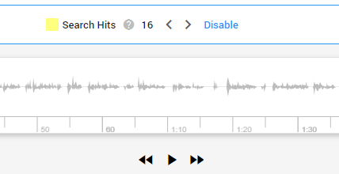
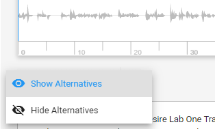
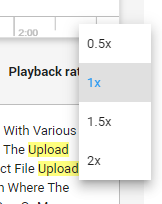

-
Insert keywords in the Search box and click Search.
-
Open the results displayed in the Document List in Document View.
When hits are found in audio or video files, they are shown in Media View.
-
Here you can play the audio or video file.
The number of search hits are shown at the top of the file.

Hits are highlighted in the transcribed text.
-
When enabled, you can view alternative words for some of the transcribed spoken content.
Hits in alternative words are also highlighted.

-
Here you can change the playback rate of a file.

-
Please note that searching in the file with Ctrl+F does not work in Media View.